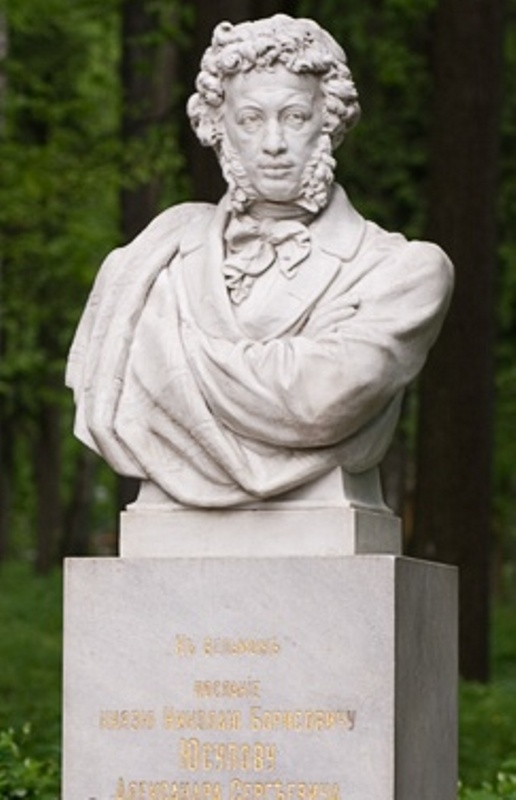

|  | Министерство культуры Российской Федерации Портал Культура.рф Проект «Образы России» |
Le musée-propriété Arkhangelskoye
Le monument de А.S.Pouchkin. L’ensemble de l’allée de Pouchkin

L’allée et le monument sont une image symbolique de «l’époque de Pouchkin»: la suite des marbres (des bustes des personnages antiques) accompagne le trajet vers le portrait de sculpture de poète dans l’ombre des hauts arbres, son «vis-à-vis» à l’autre bout de l’allée est un profil sévère de la colonne de Aleksandre I.
А.S.Pouchkin est allé dans le domaine chez le prince N.B.Iousoupov en 1827 avec son ami de Moscou et le bibliophile S.А.Sobolevskyi. La beauté et la richesse de Arkhangelskoye les ont conquéris. N.B.Iousoupov a montré à ses invités sa collection artistique et sa bibliothèque excellente. Deux ans après А.S.Pouchkin a chanté dans sa lettre poétique la vie surprenante de l’homme qui a conservé les meilleurs traits de l’époque glorieuse de Caterina la Grande à Nikolas I. En août 1830 le poète est venu encore une fois voir Iousoupov avec P.А.Viazemskyi, «et le seigneur instruit des temps de Caterina les a accueilli avec toute la gracieuseté de l’hospitalité».
La connaissance avec le prince a eu lieu dans l’enfance du poète. Plus tard Iousoupov a été le parrain au mariage de Pouchkin. Dans la famille des Iousoupov on gardait les autographes de Pouchkin transmis par V.А.Joukovskyi.
En 1903 les descendants de Nikolas Borisovitch ont mis dans le parc le buste en marbre de Pouchkin fabriqué dans l’atelier de Koutyrin. Sur le piédestal du monument il y a des lignes de la lettre «Au seigneur».